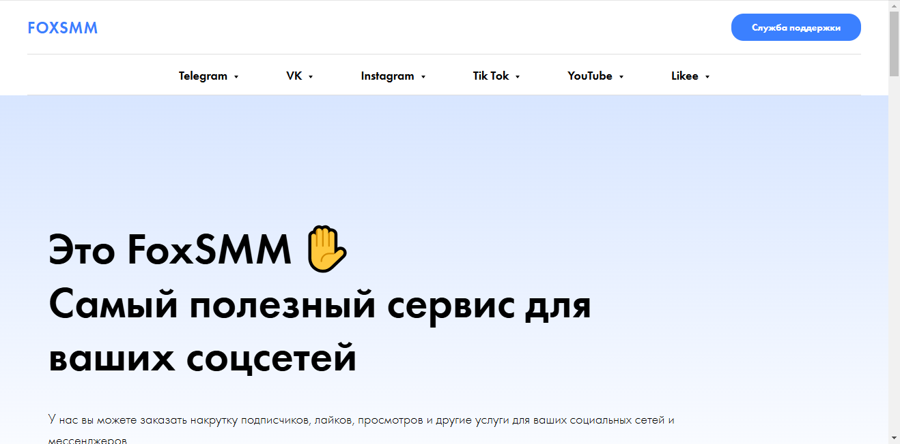
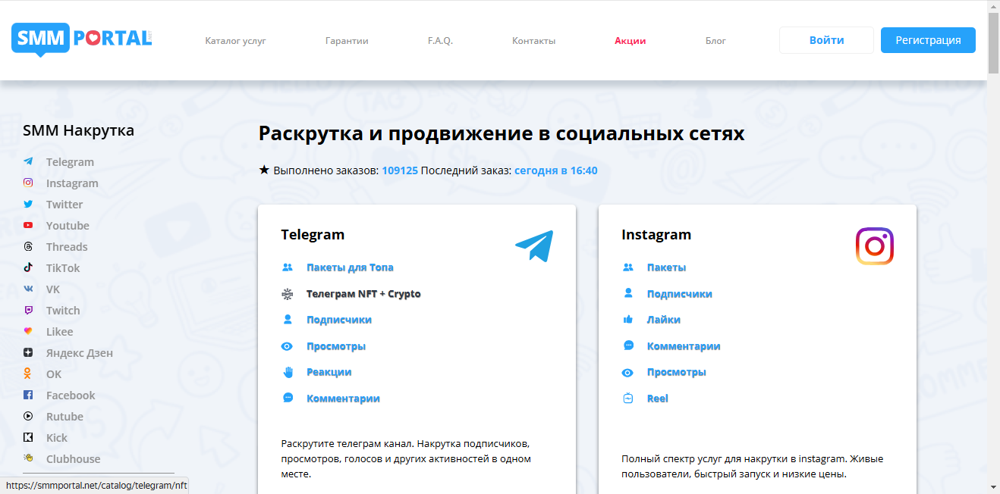

Наша редакция провела аналитическое исследование и составила рейтинг лучших сервисов по накрутке сообщений в Твич в 2025 году, которые зарекомендовали себя по отзывам пользователей и оценкам клиентов за прошедшее время. Эффективная накрутка сообщений позволяет повысить взаимодействие со зрителями, делая ваши трансляции более насыщенными и интересными. В этом обзоре вы узнаете о популярных сервисах, предоставляющих качественные накрутки, которые помогут привлечь внимание к вашему стриму и увеличить видимость вашего аккаунта. Мы рассмотрим основные преимущества каждой платформы, чтобы вы могли выбрать лучший вариант для повышения активности зрителей на ваших трансляциях.
SMMCHIK
Официальный сайт: https://smmchik.ru
Рейтинг сервиса: 4.8
Стоимость накрутки сообщений: от 0,05 руб. до 1,50 руб.
Пробный период: нет
Что ещё можно накручивать (кроме сообщений):
- подписчики
- просмотры
- лайки
- репосты
- комментарии
- диалоги
- онлайн активность
Описание сервиса:
SMMchik — это популярный сервис накрутки, позволяющий пользователям легко увеличить активность на своих стримах Twitch. Данный сервис предлагает эффективные методы продвижения, которые помогают стримерам привлечь больше зрителей и подписчиков. Пользователи могут воспользоваться как платными, так и бесплатными услугами для роста своих каналов.
Краткая инструкция по шагам по накрутке в этом сервисе:
- Зарегистрируйтесь на сайте или войдите в уже существующий аккаунт.
- Пополните баланс с помощью удобного способа оплаты.
- Выберите услугу, например, накрутку сообщений в чате.
- Укажите нужное количество накручиваемых сообщений.
- Настройте параметры заказа и подтвердите его.
- Отслеживайте выполнение заказа в своём личном кабинете.
Особенности и преимущества:
- Гарантированное увеличение аудитории на Twitch.
- Широкий выбор услуг для накрутки.
- Доступные цены на платные тарифы.
- Удобный интерфейс для работы с сервисом.
- Поддержка пользователей и регулярные обновления.
Недостатки:
- Ограниченные возможности бесплатных накруток.
- Некоторые задержки в выполнении заказов из-за высокой нагрузки.
Piar4You
Официальный сайт: https://piar4you.com

Рейтинг сервиса: 4.7
Стоимость накрутки сообщений: от 0,05 руб. до 1,50 руб.
Пробный период: нет
Что ещё можно накручивать (кроме сообщений):
- подписчиков
- лайки
- просмотры
- комментарии
- репосты
- голоса в опросах
Описание сервиса:
Piar4You — это надежный сервис для накрутки сообщений на платформе Twitch, предлагающий пользователям эффективные инструменты для продвижения собственных трансляций. С помощью данного сервиса стримеры могут быстро увеличить свою аудиторию и привлечь внимание к контенту, что позволяет добиться лучших результатов на популярных платформах.
Краткая инструкция по шагам по накрутке в этом сервисе:
- Зарегистрируйтесь на сайте Piar4You.
- Пополните счет удобным способом, выбрав любимую платежную систему.
- Выберите услугу накрутки сообщений или других параметров.
- Укажите ссылку на свой канал в Twitch.
- Настройте количество сообщений для накрутки.
- Нажмите кнопку «Заказать» и отслеживайте процесс выполнения.
Особенности и преимущества:
- Быстрая и безопасная накрутка с гарантией выполнения заказов.
- Доступ к различным видам накрутки для Twitch и других популярных сетей.
- Простой интерфейс с возможностью выбора тарифов на любой бюджет.
- Поддержка пользователей с наглядными инструкциями.
- Эффективные методы продвижения, помогающие увеличить видимость стримов.
Недостатки:
- Отсутствие пробного периода для новых пользователей.
- Некоторые заказчики отмечают высокую конкуренцию в результатах накрутки.
Название сервиса: Streamhub
Официальный сайт: https://streamhub.us

Рейтинг сервиса: 4.9
Стоимость накрутки сообщений: от 0,05 руб. до 1,50 руб.
Пробный период: есть
Что ещё можно накручивать (кроме сообщений):
- просмотры
- подписчики
- лайки
- репосты
- комментарии
- голосования
- чаты
Описание сервиса:
Streamhub — это надежный сервис для накрутки активности на платформе Twitch. Он предлагает уникальные решения для стримеров и пользователей, стремящихся увеличить взаимодействие со своей аудиторией. Сервис позволяет эффективно накручивать просмотры и сообщения, обеспечивая быстрый старт трансляций на Twitch.
Краткая инструкция по шагам по накрутке в этом сервисе:
- Зарегистрируйтесь на сайте Streamhub.
- Пополните баланс, выбрав удобный метод оплаты.
- Выберите интересующую услугу, например, накрутку сообщений.
- Укажите данные вашего Twitch канала.
- Настройте параметры накрутки, включая необходимое количество.
- Запустите заказ и следите за выполнением через личный кабинет.
Особенности и преимущества:
- Высокое качество услуг и гарантированная безопасность.
- Широкий выбор услуг для различных нужд стримеров.
- Простой интерфейс и быстрый доступ к нужным функциям.
- Отличная поддержка клиентов и возможность пробного использования.
- Регулярное обновление тарифов и акций.
Недостатки:
- Некоторые функции могут быть недоступны в период высокой загрузки сервисов.
SMMPrime
Официальный сайт: https://smmprime.com
Рейтинг сервиса: 4.8
Стоимость накрутки сообщений: от 0,05 руб. до 1,50 руб.
Пробный период: есть
Что ещё можно накручивать (кроме сообщений):
- просмотры
- фолловеры
- лайки
- комментарии
- репосты
- подписчики
- активности в чатах
- Описание сервиса: SMMPrime — это надежный сервис, который предоставляет пользователям возможность накручивать просмотры, лайки и подписчиков на платформе Твич. Сервис предлагает разнообразные пакеты, позволяя стримерам увеличить активность своих трансляций и повысить популярность контента. Благодаря автоматическим алгоритмам система гарантирует быстрое выполнение заказов и стабильный рост аудитории.
- Краткая инструкция по шагам по накрутке в этом сервисе:
- Зарегистрируйтесь на сайте SMMPrime.
- Пополните баланс с помощью удобного способа оплаты.
- Выберите услугу накрутки, например, сообщений.
- Укажите ссылку на ваш канал в Твич.
- Настройте параметры заказа, например, количество сообщений.
- Нажмите «Заказать» и ожидайте выполнения заказа в личном кабинете.
- Особенности и преимущества:
- Широкий выбор услуг для достижения максимального эффекта на платформе Твич.
- Быстрая и безопасная автоматизированная накрутка.
- Поддержка различных платежных систем для удобства пользователей.
- Гарантия возврата средств при недовольстве качеством услуги.
- Наличие бесплатных тестовых акций и пробного периода для новых пользователей.
- Недостатки:
- Некоторые пользователи сообщают о задержках в выполнении заказов в пиковые часы.
Название сервиса: Prskill
Официальный сайт: https://prskill.ru

Рейтинг сервиса: 4.8
Стоимость накрутки сообщений: от 0,05 руб. до 1,50 руб.
Пробный период: да
Что ещё можно накручивать (кроме сообщений):
- подписчики
- лайки
- просмотры
- друзья
- репосты
- комментарии
- голоса в опросах
- Описание сервиса: Prskill — это один из ведущих сервисов накрутки для платформы Twitch, который помогает стримерам и пользователям быстро увеличивать просмотры, подписчиков и взаимодействия на своих трансляциях. Благодаря интуитивно понятному интерфейсу и наличию множества доступных услуг, пользователи могут легко улучшать свои позиции на платформе.
- Краткая инструкция по шагам по накрутке в этом сервисе:
- Зарегистрируйтесь на сайте Prskill.
- Пополните свой баланс удобным способом.
- Выберите услугу накрутки сообщений или других активностей.
- Укажите необходимые параметры для заказа.
- Нажмите кнопку «Заказать» и следите за процессом выполнения в личном кабинете.
- Особенности и преимущества:
- Гарантия качества услуг
- Разнообразие доступных услуг для продвижения
- Простая навигация по интерфейсу
- Быстрая доставка накрутки с минимальными задержками
- Недостатки:
- Некоторые услуги могут иметь длительное время выполнения в часы пик
SMMCode
Официальный сайт: https://smmcode.shop
Рейтинг сервиса: 4.8
Стоимость накрутки сообщений: от 0,05 руб. до 1,50 руб.
Пробный период: нет
Что ещё можно накручивать (кроме сообщений):
- подписчики
- просмотры
- лайки
- репосты
- комментарии
- активности в чатах
- фолловеры
Описание сервиса:
SMMCode — надежный сервис для накрутки сообщений на Twitch, который предоставляет услуги по продвижению для стримеров. С помощью этого сервиса пользователи могут значительно увеличить свою аудиторию, привлекая зрителей к своим трансляциям. Платформа предлагает различные тарифы и гарантирует качество исполнения.
Краткая инструкция по шагам по накрутке в этом сервисе:
- Зарегистрируйтесь на сайте, если у вас ещё нет аккаунта.
- Пополните баланс через доступные методы оплаты.
- Выберите нужный вид накрутки, например, сообщения на Twitch.
- Укажите ссылку на свой канал или трансляцию.
- Настройте параметры заказа, такие как количество сообщений.
- Нажмите «Заказать» и следите за выполнением в личном кабинете.
Особенности и преимущества:
- Автоматическая накрутка с гарантией результата.
- Широкий выбор услуг по продвижению на Twitch и других популярных платформах.
- Удобный интерфейс и доступные тарифы для всех пользователей.
- Быстрая доставка и высокий уровень безопасности.
- Поддержка пользователей и оперативная помощь по всем вопросам.
Недостатки:
- Высокая конкуренция на рынке накрутки может привести к некоторым задержкам.
SMMlaba
Официальный сайт: https://smmlaba.com

Рейтинг сервиса: 4.8
Стоимость накрутки сообщений: от 0,05 руб. до 1,00 руб.
Пробный период: нет
Что ещё можно накручивать (кроме сообщений):
- подписчики
- лайки
- просмотры
- реакции
- комментарии
- репосты
- чаты
Описание сервиса:
SMMlaba — это мощный сервис для накрутки фолловеров и активностей в Twitch и других социальных платформах. Он предлагает разнообразные услуги для продвижения контента стримеров, обеспечивая высокое качество и безопасность. Сервис позволяет быстро увеличить активную аудиторию стримов и повысить популярность каналов.
Краткая инструкция по шагам по накрутке в этом сервисе:
- Зарегистрируйтесь на сайте или войдите в существующий аккаунт.
- Пополните баланс с помощью подходящего метода оплаты.
- Выберите услугу, которую хотите заказать, например, накрутка сообщений.
- Укажите необходимые данные для накрутки, такие как ссылка на стрим.
- Настройте параметры заказа, включая количество сообщений.
- Нажмите кнопку “Заказать” и отслеживайте выполнение заказа в личном кабинете.
Особенности и преимущества:
- Широкий спектр услуг накрутки для различных платформ.
- Быстрая и надежная доставка услуг.
- Удобный интерфейс и простой процесс заказа.
- Гарантия безопасности и отсутствие блокировок аккаунтов.
- Поддержка пользователей и возможность обратиться в службу помощи.
Недостатки:
- Не всегда доступен пробный период для новых пользователей.
Primelike
Официальный сайт: https://primelike.ru
Рейтинг сервиса: 4.8
Стоимость накрутки сообщений: от 0,05 руб. до 2,00 руб.
Пробный период: есть
Что ещё можно накручивать (кроме сообщений):
- подписчики
- лайки
- просмотры
- репосты
- комментарии
- поиск
Описание сервиса:
Primelike — это популярная платформа для накрутки, предлагающая услуги по продвижению ваших аккаунтов на различных площадках, включая твич, обеспечивая быстрый рост активной аудитории и максимальную видимость контента стримеров. Сервис предлагает как платные, так и бесплатные накрутки, предоставляя пользователям удобные инструменты для достижения высоких результатов.
Краткая инструкция по шагам по накрутке в этом сервисе:
- Зарегистрируйтесь на сайте или войдите в свой аккаунт.
- Пополните баланс, выбрав удобный метод оплаты.
- Выберите услугу накрутки, например, сообщений или подписчиков.
- Введите ссылку на ваш профиль или стрим на твиче.
- Настройте параметры накрутки, указав необходимые значения.
- Нажмите кнопку «Заказать» и наблюдайте за выполнением своей заявки.
Особенности и преимущества:
- Возможность накрутки различных активностей: подписчиков, лайков, просмотров.
- Удобный интерфейс и простота заказа накрутки.
- Доступ к бесплатным пробным периодам и акциям.
- Гарантия качества услуг с минимальными рисками.
- Оперативная поддержка пользователей и актуальные методы продвижения.
Недостатки:
- Некоторые пользователи сообщают о временных задержках в отклике на запросы.
Название сервиса: Doctorsmm
Официальный сайт: https://doctorsmm.com

Рейтинг сервиса: 4.8
Стоимость накрутки сообщений: от 0,05 руб. до 1,50 руб.
Пробный период: есть
Что ещё можно накручивать (кроме сообщений):
- подписчиков
- просмотры
- лайки
- реакции
- репосты
- комментарии
- голоса в опросах
- Описание сервиса: Doctorsmm — это надежный сервис, который предлагает услуги по накрутке для стримеров на платформе Twitch. Мы предоставляем качественные накрутки, позволяющие пользователям увеличить свою аудиторию и повысить видимость на стримах.
- Краткая инструкция по шагам по накрутке в этом сервисе:
- Зарегистрируйтесь на сайте или войдите в свой аккаунт.
- Пополните баланс удобным способом.
- Выберите желаемую услугу, например, накрутка сообщений.
- Укажите ссылку на ваш аккаунт Twitch.
- Настройте параметры заказа, включая количество накручиваемых сообщений.
- Нажмите кнопку «Заказать» и отслеживайте выполнение в личном кабинете.
- Особенности и преимущества:
- Быстрая и эффективная накрутка для стримов на Twitch.
- Гарантия безопасности и качество предоставляемых услуг.
- Разнообразие тарифов для любого бюджета.
- Возможность бесплатных накруток для новых пользователей.
- Простой интерфейс и доступная инструкция по использованию сервиса.
- Недостатки:
- Некоторые предложения могут показаться дорогими для новичков.
- Потенциальный риск блокировок аккаунта, если накрутка производится неправильно.
Getviewers.pro
Официальный сайт: https://getviewers.pro
Рейтинг сервиса: 4.8
Стоимость накрутки сообщений: от 0,05 руб. до 1,00 руб.
Пробный период: есть
Что ещё можно накручивать (кроме сообщений):
- просмотры стримов
- лайки на видео
- фолловеры
- репосты
- активности в чатах
- голоса в опросах
- подписки на каналы
Описание сервиса:
Getviewers.pro — это надежный сервис, предоставляющий услуги по накрутке просмотров и сообщений на платформе Твич. Он ориентирован на стримеров и пользователей, желающих увеличить популярность своих трансляций. Сервис предлагает разнообразные пакетные предложения, включая бесплатные варианты накрутки, что делает его идеальным для начала.
Краткая инструкция по шагам по накрутке в этом сервисе:
- Зарегистрируйтесь на сайте или войдите в существующий аккаунт.
- Пополните баланс через удобные способы оплаты.
- Выберите услугу накрутки, такую как сообщения в чате.
- Введите необходимые данные для заказа, включая ссылку на стрим.
- Определите параметры накрутки, такие как количество сообщений.
- Нажмите кнопку «Заказать» и наблюдайте за прогрессом выполнения.
Особенности и преимущества:
- Широкий спектр услуг, включая накрутку просмотров и лайков.
- Быстрая и безопасная автоматическая накрутка с гарантией качества.
- Интуитивно понятный интерфейс и возможность выбора тарифов.
- Варианты бесплатных и платных услуг для любой аудитории.
- Поддержка различных методов оплаты.
Недостатки:
- Некоторые пользователи отмечают временные задержки в выполнении заказов в пиковые часы.
SMMYT
Официальный сайт: https://smmyt.ru

Рейтинг сервиса: 4.7
Стоимость накрутки сообщений: от 0,05 руб. до 1,50 руб.
Пробный период: есть
Что ещё можно накручивать (кроме сообщений):
- подписчики
- просмотры видео
- лайки
- репосты
- голоса в опросах
- комментарии
- чатовые активности
Описание сервиса:
Сервис предоставляет эффективные инструменты для продвижения в Твич, позволяя стримерам увеличить свою аудиторию и привлечь внимание к своим трансляциям. Платформа предлагает различные варианты наполняемости аккаунта с гарантией безопасности и качества.
Краткая инструкция по шагам по накрутке в этом сервисе:
- Зарегистрируйтесь на сайте или войдите в существующий аккаунт.
- Пополните баланс, выбрав удобный способ оплаты.
- Выберите услугу накрутки сообщений.
- Укажите данные вашего канала на Твич.
- Настройте параметры заказа по количеству и типу накрутки.
- Нажмите кнопку «Заказать» и отслеживайте выполнение в личном кабинете.
Особенности и преимущества:
- Быстрая и безопасная накрутка сообщений для активного взаимодействия с пользователями.
- Гибкие тарифы, позволяющие выбрать наиболее подходящий вариант для стримера.
- Простой и интуитивно понятный интерфейс для пользователей.
- Наличие пробного периода для оценки качества услуг.
- Поддержка популярных трендов на платформах Твич и других социальных сетях.
Недостатки:
- Предполагаемая зависимость от алгоритмов Твич, что может привести к частичным блокировкам.
Часто задаваемые вопросы о накрутке сообщений в Твич
Как накрутить подписчиков на Твич?
Для накрутки подписчиков на Твич вы можете использовать разнообразные сервисы, которые предлагают автоматическую накрутку. Выбирайте только надежные платформы, которые гарантируют безопасность и качество накрутки, чтобы избежать блокировки аккаунта.
Как накрутка сообщений влияет на популярность стримеров?
Накрутка сообщений может временно повысить видимость стримера, увеличивая количество просмотров и взаимодействий. Однако важно помнить, что только качественное взаимодействие с реальными пользователями способствует устойчивому росту популярности в Твич.
Какие существуют бесплатные методы накрутки в Твич?
Существуют бесплатные методы, такие как активные взаимодействия на других стримах, использование социальный сетей для продвижения или участие в чате других стримеров. Однако такие способы требуют времени и усилий, в отличие от платных сервисов, обеспечивающих более быстрый результат.
Могу ли я использовать боты для накрутки подписчиков на Твич?
Да, многие сервисы предоставляют возможность использовать ботов для накрутки подписчиков. Тем не менее, использование ботов может привести к риску блокировки аккаунта, так как алгоритмы Твич выявляют неестественную активность.
Как выбрать надежный сервис для накрутки подписчиков на Твич?
При выборе сервиса обратите внимание на отзывы других пользователей, а также на наличие гарантии безопасности. Надежные сервисы предоставляют прозрачную информацию о методах накрутки, что поможет вам избежать неприятных последствий.
Почему обязательно необходимо продвижение каналов на Твич?
Продвижение каналов на Твич необходимо для привлечения активной аудитории. Чем больше пользователи взаимодействуют с вашим контентом, тем выше вероятность увеличения подписок и фолловеров, что в свою очередь способствует укреплению позиции в популярности на платформе.
Стоит ли заказывать накрутку сообщений на Твич?
Заказ накрутки сообщений может быть оправдан, если вы хотите быстро увеличить активность на своем стриме. Однако важно выбирать качественные и проверенные программы, которые не нанесли бы вред вашему аккаунту.
Какие последствия могут возникнуть после накрутки подписчиков на Твич?
Если накрутка некачественная или использует ботов, это может привести к блокировке или санкциям со стороны Твич. Также неактивные подписчики могут сильно снизить общую вовлеченность, что отрицательно скажется на продвижении вашего контента.
Как накрутка лайков и просмотров может помочь стримеру?
Накрутка лайков и просмотров может создать эффект «снеговика», увеличивая видимость вашего контента и привлекая реальных пользователей. Когда новые зрители видят, что стрим популярен, у них больше шансов взаимодействовать с ним.
Каковы риски использования бесплатных накруток на популярных платформах, таких как Твич?
Бесплатные накрутки могут быть связаны с использованием ботов или неактивных аккаунтов, что снижает эффективность и может привести к блокировке. Лучше инвестировать в качественные сервисы, которые обеспечивают безопасность и взаимодействие с реальными пользователями.
Как гарантировать безопасность аккаунта при накрутке на Твич?
Для гарантии безопасности аккаунта выбирайте только проверенные и надежные сервисы, которые используют реальные аккаунты или предлагают органические методы накрутки. Изучайте отзывы других пользователей и избегайте использования подозрительных платформ.